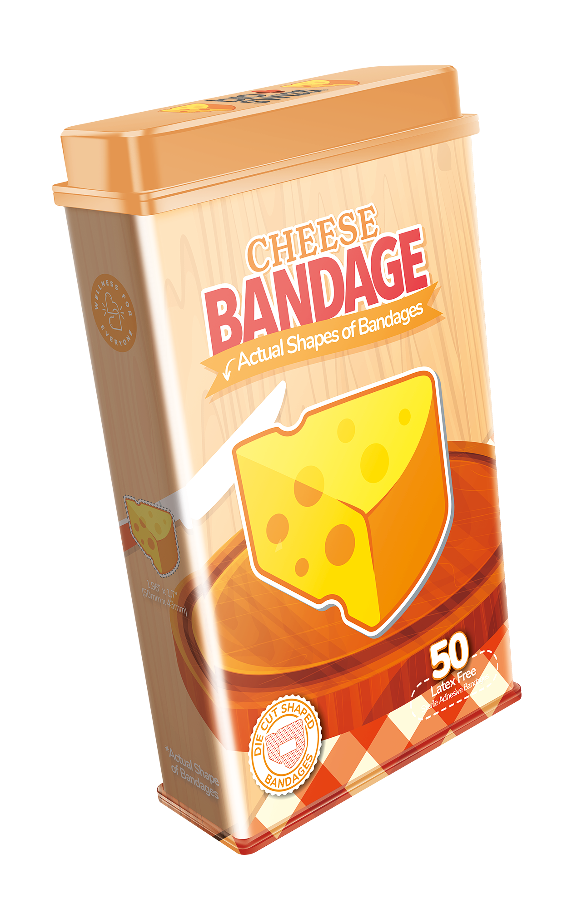

BioSwiss Rebrand
Donnamax / Commercial


The biggest problem of this product was that customers had a hard time understanding that the bandages are actually die-cut to the actual shapes, which is the main selling point of this product. This was also the main issue I tried to solve with the rebrand.
The new tagline of the product, “Bandages Shaped Like Stickers,” can give customers a great example of what to expect, and relate the die-cut shapes of the stickers to this product.
I added the ribbons and badges as design elements, which are classic elements to emphasize important information. Another addition to the design is the white outlines and shadows of the title and bandage designs to lean into the look of stickers, while highlighting important information. In some cases, I also added dashed lines around the shapes as a classic way of indicating cutting lines.
Before Rebrand

After Rebrand

More Styles
